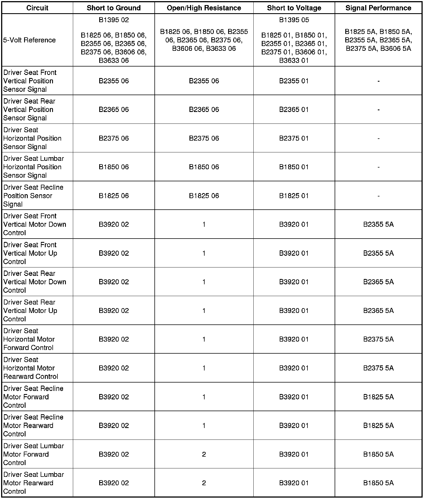
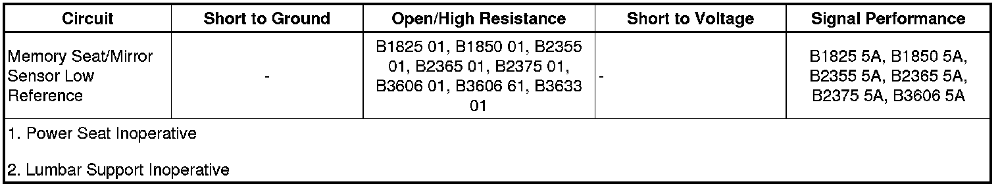

B1860
DTC B1825, B1850, B1860, B2355, B2365, or B2375
Diagnostic Instructions
* Perform the Diagnostic System Check - Vehicle (Initial Inspection and Diagnostic Overview) prior to using this diagnostic procedure.
* Review Strategy Based Diagnosis (Initial Inspection and Diagnostic Overview) for an overview of the diagnostic approach.
* Diagnostic Procedure Instructions (Initial Inspection and Diagnostic Overview)provides an overview of each diagnostic category.
DTC Descriptors
DTC B1825 01
- Seat Recline Position Sensor Circuit Short to Battery
DTC B1825 06
- Seat Recline Position Sensor Circuit Short to Ground or Open
DTC B1825 5A
- Seat Recline Position Sensor Direction of Motion Reversed
DTC B1850 01
- Seat Lumbar Horizontal Position Sensor Circuit Short to Battery
DTC B1850 06
- Seat Lumbar Horizontal Position Sensor Circuit Short to Ground or Open
DTC B1850 5A
- Seat Lumbar Horizontal Position Sensor Direction of Motion Reversed
DTC B2355 01
- Left Front Seat Front Vertical Position Sensor Circuit Short to Battery
DTC B2355 06
- Left Front Seat Front Vertical Position Sensor Circuit Short to Ground or Open
DTC B2355 5A
- Left Front Seat Front Vertical Position Sensor Direction of Motion Reversed
DTC B2365 01
- Left Front Seat Rear Vertical Position Sensor Circuit Short to Battery
DTC B2365 06
- Left Front Seat Rear Vertical Position Sensor Circuit Short to Ground or Open
DTC B2365 5A
- Left Front Seat Rear Vertical Position Sensor Direction of Motion Reversed
DTC B2375 01
- Left Front Seat Assembly Horizontal Position Sensor Circuit Short to Battery
DTC B2375 06
- Left Front Seat Assembly Horizontal Position Sensor Circuit Short to Ground or Open
DTC B2375 5A
- Left Front Seat Assembly Horizontal Position Sensor Direction of Motion Reversed
Diagnostic Fault Information


Circuit/System Description
The position sensor that set this diagnostic trouble code (DTC) is either attached to the seat directional motor drive cable or directly to the motor it monitors. It receives a 5-volt reference and ground from the memory seat module (MSM). The sensor sends a voltage signal that varies with the movement of the seat through the signal circuit to the MSM. Then based on this voltage signal, the MSM determines the position of the seat.
Conditions for Running the DTC
The MSM must be powered.
Conditions for Setting the DTC
B1825, B1850, B2355, B2365, B2375 01
If the MSM sees the analog input from this sensor is greater than 4.75 volts, the sensor will be considered out of range and the MSM will set this DTC.
B1825, B1850, B2355, B2365, B2375 06
If the MSM sees the analog input from this sensor is less than 0.22 volts , the sensor will be considered out of range and the MSM will set this DTC.
B1825, B1850, B2355, B2365, B2375 5A
This DTC will set, if the MSM is controlling a motor in one direction and it's position sensor is tracking the motor in the opposite direction. The sensor is either mounted or wired incorrectly, or the polarity of the motor control circuits are reversed.
Action Taken When the DTC Sets
All memory recall functions will be disabled.
Conditions for Clearing the DTC
* The current DTC will clear and set to history, when the MSM sees the analog input from the sensor as between 0.22 volts and 4.75 volts and the ignition is cycled OFF then back to ACC or RUN.
* The history DTC will clear after 50 consecutive fault-free ignition cycles have occurred.
Diagnostic Aids
* The memory seat module (MSM) may be referenced as the driver position module.
* All position sensors use common ground and 5-volt reference circuits.
* If the 5-volt reference circuit is shorted to voltage multiple position sensor codes will set.
* If the 5-volt reference circuit is shorted to ground multiple position sensor codes will set.
* If the sensor ground circuit is open multiple codes will set.
Reference Information
Schematic Reference
Driver Seat Schematics (Driver Seat Schematics)
Connector End View Reference
Component Connector End Views (Connector Views)
Description and Operation
Power Seats System Description and Operation (Folding Seat) (Power Seats System Description and Operation (Folding Seat))Power Seats System Description and Operation (Front Seat) (Power Seats System Description and Operation (Front Seat))
Electrical Information Reference
* Circuit Testing (Component Tests and General Diagnostics)
* Connector Repairs (Component Tests and General Diagnostics)
* Testing for Intermittent Conditions and Poor Connections (Component Tests and General Diagnostics)
* Wiring Repairs (Component Tests and General Diagnostics)
Scan Tool Reference
Control Module References (Programming and Relearning)
Circuit/System Verification
Ignition ON, observe the scan tool driver seat and lumbar sensor parameters. The readings should be between 0.22 volts and 4.75 volts and change while adjusting seat and lumbar positions.
Circuit/System Testing
1. Ignition OFF, disconnect the X2 harness connector at the appropriate seat adjuster motor or the X325 inline harness connector at the lumbar motor.
2. Ignition OFF, test for less than 2 ohms of resistance between ground and the appropriate low reference circuit terminal listed below.
* Seat front vertical position sensor terminal B
* Seat rear vertical position sensor terminal D
* Seat horizontal position sensor terminal C
* Seat recline position sensor terminal 1
* Lumbar horizontal position sensor terminal(TM)C
• If greater than the specified range, test the low reference circuit for an open/high resistance. If the circuit tests normal, replace the MSM.
3. Ignition ON, test for 4.8-5.2 volts between ground and the appropriate 5-volt reference circuit terminal listed below.
* Seat front vertical position sensor terminal D
* Seat rear vertical position sensor terminal A
* Seat horizontal position sensor terminal A
* Seat recline position sensor terminal 2
* Lumbar horizontal position sensor terminal D
• If less than the specified range, test the 5-volt reference circuit for a short to ground or an open/high resistance. If the circuit tests normal, replace the MSM.
• If greater than the specified range, test the 5-volt reference circuit for a short to voltage. If the circuit tests normal, replace the MSM.
4. Verify the appropriate scan tool driver seat or lumbar sensor parameter is less than 2 volts.
• If greater than 2 volts, test the appropriate signal circuit terminal listed below for a short to voltage. If the circuit tests normal, replace the MSM.
* Seat front vertical position sensor terminal C
* Seat rear vertical position sensor terminal B
* Seat horizontal position sensor terminal B
* Seat recline position sensor terminal 3
* Lumbar horizontal position sensor terminal E
5. Install a 3A fused jumper wire between the 5-volt reference circuit terminal and the signal circuit terminal of the appropriate sensor listed below. Verify the related scan tool driver seat or lumbar sensor parameter is greater than 4.75 volts.
* Seat front vertical position sensor terminal D and terminal C
* Seat rear vertical position sensor terminal A and terminal B
* Seat horizontal position sensor terminal A and terminal B
* Seat recline position sensor terminal 2 and terminal 3
* Lumbar horizontal position sensor terminal D and terminal E
• If less than the specified value, test the signal circuit for short to ground or an open/high resistance. If the circuit tests normal, replace the MSM.
6. If all circuits test normal, test or replace the position sensor
Repair Instructions
Perform the Diagnostic Repair Verification (Verification Tests) after completing the diagnostic procedure.
* Seat Horizontal Adjuster Position Sensor Replacement (Seat Horizontal Adjuster Position Sensor Replacement)
* Seat Vertical Adjuster Position Sensor Replacement (Seat Vertical Adjuster Position Sensor Replacement)
* Front Seat Recliner Position Sensor Replacement (Front Seat Recliner Position Sensor Replacement)
* Front Seat Lumbar Support Replacement (Front Seat Lumbar Support Replacement)
* Control Module References (Programming and Relearning)for MSM replacement, setup, and programming